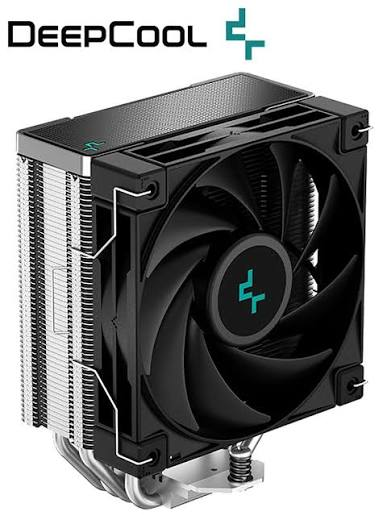

Повітряне (Air)
Баштові кулери
Тепло від кришки CPU передається через мідні теплові трубки на алюмінієвий радіатор і розсіюється вентиляторами.
- Максимальна надійність — нема чому протікати
- Оптимальна ціна для процесорів до 180–220 Вт
- Обслуговування зводиться до очищення від пилу